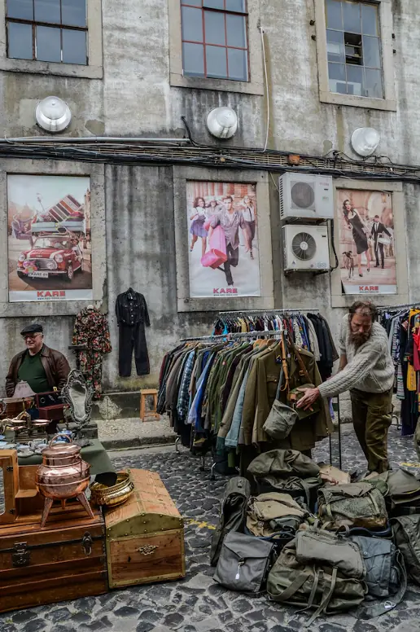

Cognac western boots
Resoled, soft as a baseball glove
Hand-picked vintage · Grand Central District
Racks of ’60s to Y2K denim, dresses, band tees, leather and boots, sorted by era and size and priced like a thrift store that actually did the digging for you.


Open Tue to Sun
Just tagged
One of each, so when it’s gone it’s gone. Call and we’ll hold any piece for 24 hours.
Resoled, soft as a baseball glove

Medium wash, no stretch

Faded black, cracked print

Mixed prints, coconut buttons
Shop by category
About 200 new pieces hit the floor every week. Here is where they land.
Buying counter
Book a 20-minute slot, bring clean pieces on hangers, and we go through every item with you. Take cash on the spot, or 50% more in store credit.

Once a month, rain or shine
On the second Sunday of every month our back lot turns into an outdoor market: about 30 local vendors selling vintage, vinyl, plants, handmade jewelry and zines, plus a coffee cart, a taco truck and a DJ until close.
Overheard at the register
4.9 ★★★★★ from 820+ Google reviews
"Found a ’70s suede jacket that fits like it was made for me, for $68. Theo sewed a loose button back on while I waited."
Priya S. · Google review
"Sold two bags of my dad's old work shirts and band tees. Walked out with $140 cash in twenty minutes, and they explained every single price."
Marcus T. · Sold to Second Sunday
"The market is my favorite morning of the month. Coffee, a DJ, and I always leave with one more pair of boots than I planned."
Jen L. · Google review
2875 Central Ave, St. Petersburg, FL 33713 · Free lot out back